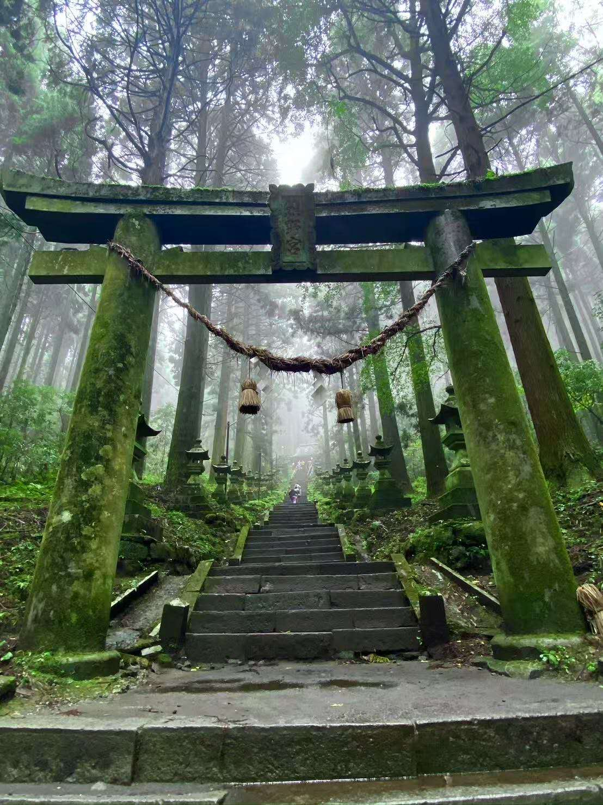
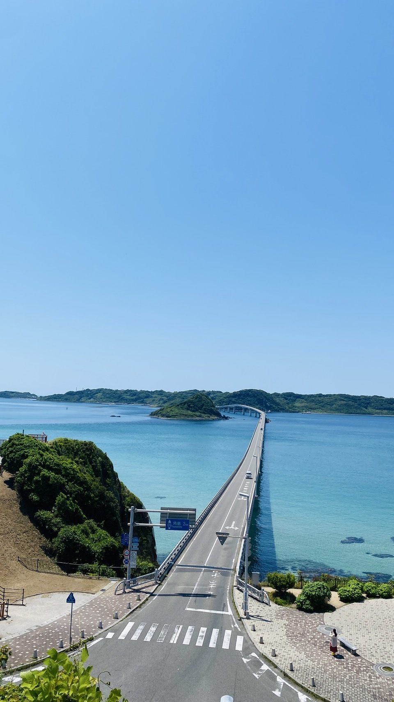
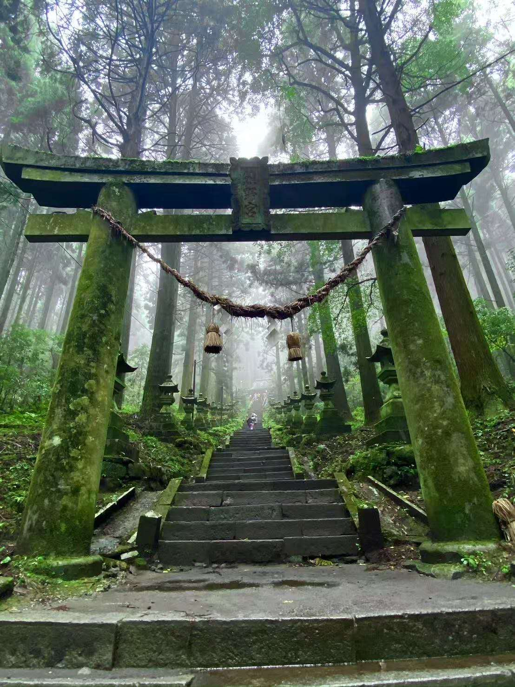
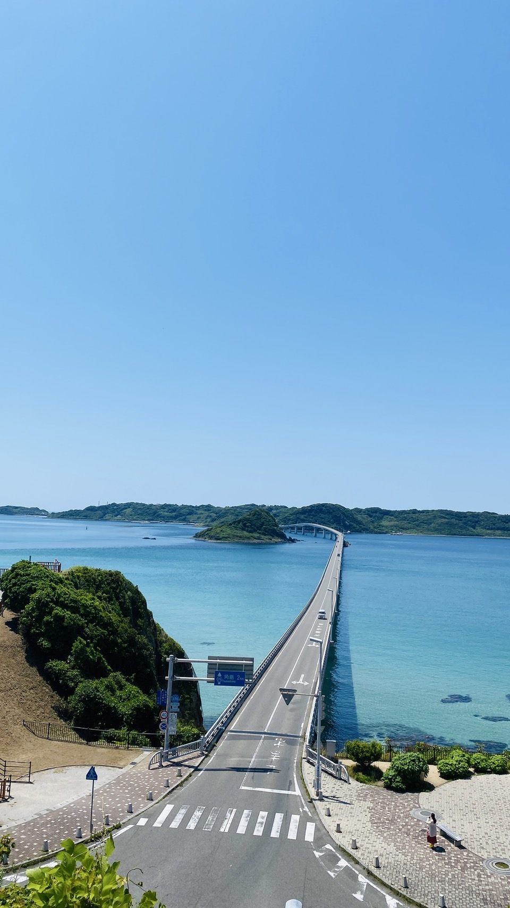

FLY Kanko ได้รับการแนะนำในรายการโทรทัศน์ ในฐานะบริษัทที่ให้ความสำคัญกับความปลอดภัยและความสะดวกสบายของลูกค้า
พนักงานขับรถทุกคนได้รับการอบรมอย่างเข้มงวด รถทุกคันผ่านการตรวจเช็คอย่างสม่ำเสมอ
เราไม่ใช่แค่ "พาหนะ" แต่คือ "เพื่อนร่วมทางที่เชื่อถือได้" ที่ทำให้การเดินทางมีคุณค่ามากยิ่งขึ้น
ทีมงานทุกคนมุ่งมั่นให้บริการอย่างจริงใจ เพื่อให้ลูกค้าทุกคนพูดว่า “อยากใช้บริการอีกครั้ง”
โปรดรับชมวิดีโอด้านล่าง เพื่อสัมผัสเรื่องราวเบื้องหลังและความตั้งใจของ FLY Kanko


ศาลเจ้ายาไนซูอินาริ - ยานากาวะ - อิโตชิมะ - หุบเขาทาคาจิโฮ
หนึ่งวันที่เต็มไปด้วยธรรมชาติและวัฒนธรรม ศาลเจ้าแดงสะท้อนทะเลที่ยาไนซูอินาริ ล่องเรือชมความสงบที่ยานากาวะ คาเฟ่ริมทะเลที่อิโตชิมะ และหุบเขาอันลึกลับของทาคาจิโฮ
→ ทัวร์สุดประทับใจที่ช่วยเติมพลังทั้งร่างกายและจิตใจ

 



ภูเขาไฟอาโสะ - สะพานสึโนะชิมะ - ศาลเจ้าคามิชิคิมิ คุมาโนะอิมาสุ
ทุ่งหญ้าเขียวขจีและภูเขาไฟที่ปะทุของอาโสะ วิวทะเลสีฟ้าจากสะพานสึโนะชิมะ และศาลเจ้าอันสงบในป่าลึกที่คามิชิคิมิ
→ เส้นทางท่องเที่ยวสุดพิเศษที่พาคุณหลุดออกจากวันธรรมดา

30 คัน / 40・45・49 ที่นั่ง

6 คัน / 27・33 ที่นั่ง

3 คัน / 22・17・18 ที่นั่ง

2 คัน / 13 ที่นั่ง

เราคำนึงถึงความปลอดภัยของลูกค้าเป็นหลัก
รถทุกคันมีเข็มขัดนิรภัยที่ที่นั่งทุกที่

คนขับของเราสื่อสารได้ทั้งภาษาญี่ปุ่นและภาษาจีน
สอบถามได้ตลอดระหว่างเดินทาง

เดินทางท่องเที่ยวหรือไปทัศนศึกษาด้วยรถบัสที่สะดวกสบาย

รองรับทั้งรอบปกติและแบบเช่าเหมาคัน
ขนส่งทั้งผู้คนและอุปกรณ์ในคราวเดียว
พร้อมให้บริการอย่างยืดหยุ่นแก่ชุมชนและกิจกรรมต่าง ๆ
บริษัท FLY Kanko จำกัด
4-5-53 Kamata, Higashi-ku, Fukuoka 813-0023
สาขาคุมาโมโตะ
3201-4 Yoshitomi, Shisui-machi, Kikuchi-shi, Kumamoto
โทรศัพท์: 092-519-0886
แฟกซ์: 092-516-3414
อีเมล: flykankou@yahoo.co.jp

LINE ID: fly20250407@gmail.com

WeChat ID: FLYkankou